- Crear una función crearCuentaRegresiva que tome como argumento un número entero numeroInicial y que devuelva un array con cuyo primer ítem sea numeroInicial y los demás ítems sean números enteros sucesivos descendientes, hasta llegar a 0.
- Crear una función invertir que tome como argumento un array array y que devuelva un array con los mismos valores pero en orden invertido.
- Crear una función removerDuplicados que tome como argumento un array y que devuelva un array con los mismos valores de array pero sin los valores duplicados.
- Creá la función montoTotal, que tome como parámetro un array de objetos. La función debe retornar un solo valor, con el monto total de todos los clientes, retornado con la siguiente frase: `Todos los clientes adeudan un total de: ${total}`
- Cree la función descuento, que otorgue un 5% de descuento a los usuarios que sean clientes preferenciales. Retorne el array con todos los clientes, sean preferenciales o no, para poder apreciar el descuento de aquellos que si lo deben recibir.
- Crear una función buscarCliente que tome como parámetros un array y el nombre del cliente. La función debe retornar la información completa de ese cliente.
Consignas:
Anotaciones:
Temario de la clase:
- Abstraccion
- Funciones de orden superior
- Metodos de busqueda y transformacion
Abstraccion
Crear una función buscarCliente que tome como parámetros un array y el nombre del cliente. La función debe retornar la información completa de ese cliente.
En JavaScript, se puede crear una función utilizando la palabra clave function, seguida del nombre de la función y una lista de parámetros entre paréntesis. Luego, se escribe el código que se quiere ejecutar dentro de llaves. Por ejemplo:
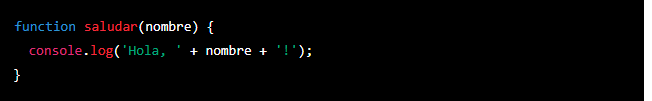Para utilizar la función, se puede llamar a ella proporcionando los argumentos necesarios entre paréntesis. Por ejemplo:
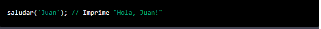La abstracción de funciones se puede utilizar para dividir el código en trozos más manejables y reutilizables. Por ejemplo, en lugar de escribir varias veces el mismo código para realizar una tarea específica, se puede crear una función y llamarla cada vez que se necesite. Esto hace que el código sea más legible y fácil de mantener.
Además, las funciones también pueden devolver valores utilizando la palabra clave return. Por ejemplo:
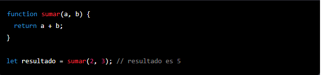En este ejemplo, la función sumar toma dos números como parámetros y devuelve su suma. Luego, se puede asignar el resultado de la función a una variable para utilizarlo más tarde en el código.
Funciones de Orden Superior
Las funciones de orden superior son una característica importante de JavaScript que permite a los programadores crear y utilizar funciones de una manera más poderosa y flexible. Estas funciones son aquellas que aceptan otras funciones como argumentos o que devuelven funciones como resultado.
Una de las principales ventajas de las funciones de orden superior es que permiten a los programadores escribir código más conciso y legible. En lugar de tener que escribir varias líneas de código para realizar una tarea específica, se puede utilizar una función de orden superior para realizar la misma tarea de manera más eficiente. Por ejemplo, en lugar de tener que escribir un bucle for para iterar a través de una matriz y realizar una tarea en cada elemento, se puede utilizar la función map para realizar la misma tarea de manera más sencilla.
Otra ventaja de las funciones de orden superior es que permiten a los programadores escribir código más reusable. En lugar de tener que escribir el mismo código varias veces para realizar una tarea específica, se puede crear una función de orden superior y utilizarla en diferentes partes del código. Esto hace que el código sea más fácil de mantener y actualizar, ya que solo se tiene que cambiar la función en un solo lugar en lugar de tener que hacerlo en varios.
Una de las funciones de orden superior más comunes en JavaScript es map, que permite iterar a través de una matriz y aplicar una función a cada elemento de la matriz. Por ejemplo:
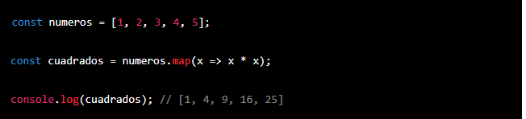En este ejemplo, la función map recibe como argumento una función anónima que multiplica cada elemento de la matriz por sí mismo. La función map devuelve una nueva matriz con los resultados de la función aplicada a cada elemento de la matriz original.
Otra función de orden superior común es filter, que permite filtrar una matriz utilizando una función de predicado. Por ejemplo:
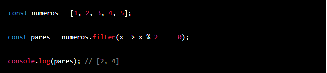En este ejemplo, la función filter recibe como argumento una función anónima que verifica si un número es par. La función filter devuelve una nueva matriz con los elementos de la matriz original que cumplen con la condición del predicado.
Otra función de orden superior importante es reduce, que permite reducir una matriz a un único valor utilizando una función de acumulación. Por ejemplo:
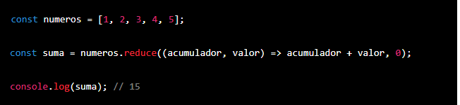En este ejemplo, la función reduce recibe como argumento una función anónima que suma el acumulador y el valor actual y un valor inicial de 0. La función reduce devuelve el valor final resultante de aplicar la función de acumulación a cada elemento de la matriz.
Además de estas funciones, existen muchas otras funciones de orden superior en JavaScript, como every, some, find, entre otras. Todas estas funciones son útiles para realizar tareas específicas de manera más eficiente y legible.
En resumen, las funciones de orden superior son una característica esencial de JavaScript que permite a los programadores escribir código más conciso, legible y reusable. Estas funciones son una herramienta valiosa para cualquier programador que quiera aprovechar al máximo el poder de JavaScript.
Metodos de busqueda y transformacion
Los métodos de arrays son funciones especiales que se pueden utilizar para realizar operaciones en arrays. Algunos ejemplos de métodos de arrays en JavaScript son map, filter, reduce, forEach, sort, y concat.
Los métodos de arrays se implementaron en JavaScript a partir de la versión 1.6, que fue lanzada en 2005. Desde entonces, se han añadido nuevos métodos de arrays con cada nueva versión de JavaScript.
Los métodos de arrays más populares son map, filter, y reduce, que son considerados funciones de orden superior. Estos métodos aceptan otras funciones como argumentos y pueden utilizarse para realizar operaciones complejas en un array.
Algunos conceptos asociados con los métodos de arrays son la iteración, la transformación de datos, y el manejo de operaciones complejas en un array. Los métodos de arrays se utilizan a menudo para recorrer un array y realizar operaciones específicas en cada elemento del array, o para transformar los datos de un array de una manera determinada. También se utilizan para realizar operaciones complejas en un array, como la reducción de un conjunto de datos a un valor único.
Metodos de Arrays que son considerados funciones de orden superior:
map: Aplica una función a cada elemento de un array y devuelve un nuevo array con los resultados.
filter: Toma una función que se utiliza como un predicado (es decir, una función que devuelve verdadero o falso) y devuelve un nuevo array con los elementos que cumplen con el predicado.
reduce: Aplica una función a cada elemento de un array y acumula el resultado en un valor acumulador.
find: Devuelve el primer elemento del array que cumple con el predicado especificado.
some: Devuelve verdadero si al menos un elemento del array cumple con el predicado especificado.
every: Devuelve verdadero si todos los elementos del array cumplen con el predicado especificado.
Metodos de Arrays que NO son considerados funciones de orden superior:
forEach: Aplica una función a cada elemento del array. A diferencia de map, forEach no devuelve un nuevo array, sino que modifica el array original.
reverse: Invierte el orden de los elementos del array.
concat: Devuelve un nuevo array que es la combinación de dos o más arrays.
slice: Devuelve un nuevo array que contiene una subsecuencia del array original.
splice: Modifica el array original eliminando elementos existentes y/o agregando nuevos elementos.
Ejemplos de metodos de arrays
map: Este método aplica una función a cada elemento de un array y devuelve un nuevo array con los resultados. Por ejemplo:
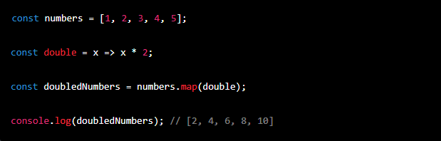En este ejemplo, se utiliza el método map para aplicar la función double a cada elemento del array numbers y devolver un nuevo array con los resultados. El resultado es un array con los números del array numbers multiplicados por 2.
filter: Este método toma una función que se utiliza como un predicado (es decir, una función que devuelve verdadero o falso) y devuelve un nuevo array con los elementos que cumplen con el predicado. Por ejemplo:
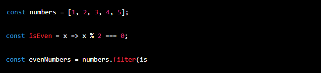reduce: Este método aplica una función a cada elemento de un array y acumula el resultado en un valor acumulador. Por ejemplo:
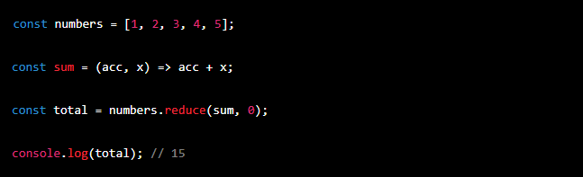En este ejemplo, se utiliza el método reduce para aplicar la función sum a cada elemento del array numbers y acumular el resultado en el valor acumulador total. El resultado es la suma de todos los números del array numbers.
find: Este método devuelve el primer elemento del array que cumple con el predicado especificado. Por ejemplo:
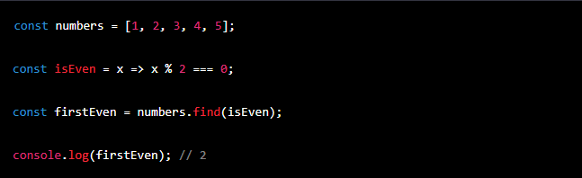En este ejemplo, se utiliza el método find para buscar el primer elemento del array numbers que cumpla con el predicado especificado en la función isEven. El resultado es el primer número par del array numbers.
some: Este método devuelve verdadero si al menos un elemento del array cumple con el predicado especificado. Por ejemplo:
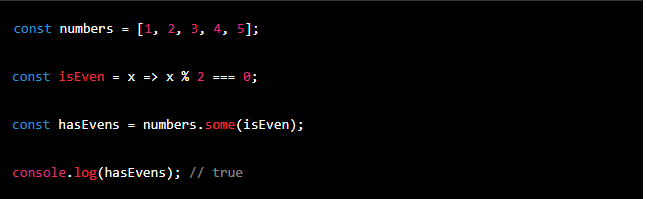En este ejemplo, se utiliza el método some para comprobar si al menos un elemento del array numbers cumple con el predicado especificado en la función isEven. El resultado es verdadero, ya que el array numbers contiene al menos un número par.
every: Este método devuelve verdadero si todos los elementos del array cumplen con el predicado especificado. Por ejemplo:
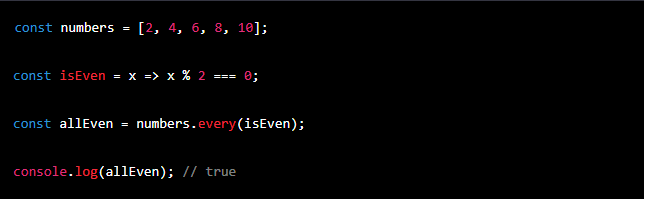En este ejemplo, se utiliza el método every para comprobar si todos los elementos del array numbers cumplen con el predicado especificado en la función isEven. El resultado es verdadero, ya que todos los números del array numbers son pares.
forEach: Este método aplica una función a cada elemento del array. A diferencia de map, forEach no devuelve un nuevo array, sino que modifica el array original. Por ejemplo:
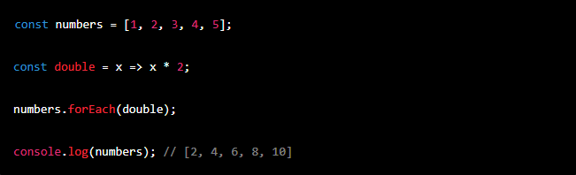En este ejemplo, se utiliza el método forEach para aplicar la función double a cada elemento del array numbers. El array original numbers es modificado y queda como [2, 4, 6, 8, 10].
sort: Este método ordena los elementos del array. Por ejemplo:
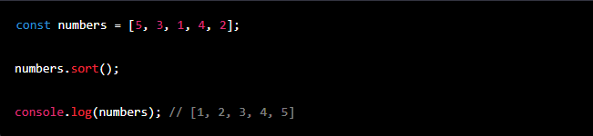En este ejemplo, se utiliza el método sort para ordenar los elementos del array numbers. El resultado es un array con los números ordenados de menor a mayor.
reverse: Este método invierte el orden de los elementos del array. Por ejemplo:
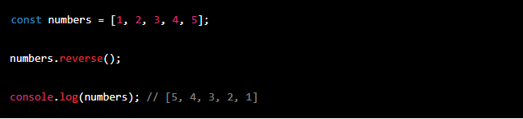En este ejemplo, se utiliza el método reverse para invertir el orden de los elementos del array numbers. El resultado es un array con los números ordenados de mayor a menor.
concat: Este método devuelve un nuevo array que es la combinación de dos o más arrays. Por ejemplo:
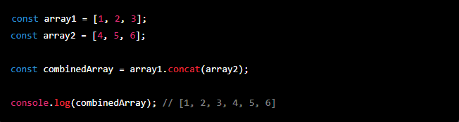En este ejemplo, se utiliza el método concat para combinar los arrays array1 y array2 en un nuevo array combinedArray. El resultado es un array que contiene todos los elementos de array1 y array2.
slice: Este método devuelve un nuevo array que contiene una subsecuencia del array original. Por ejemplo:
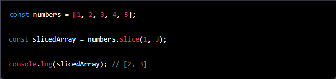En este ejemplo, se utiliza el método slice para extraer una subsecuencia del array numbers que va desde el índice 1 hasta el índice 3 (sin incluirlo). El resultado es un array que contiene los elementos del array numbers con índices 1 y 2.
splice: Este método modifica el array original eliminando elementos existentes y/o agregando nuevos elementos. Por ejemplo:
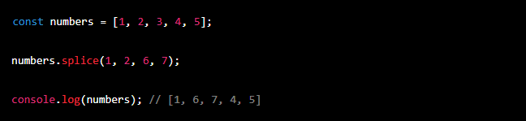En este ejemplo, se utiliza el método splice para eliminar dos elementos del array numbers a partir del índice 1 y agregar los elementos 6 y 7 en su lugar. El resultado es un array que contiene los elementos 1, 6, 7, 4 y 5.